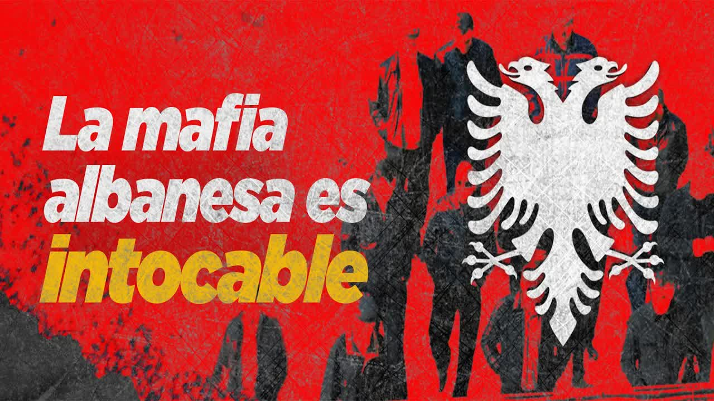
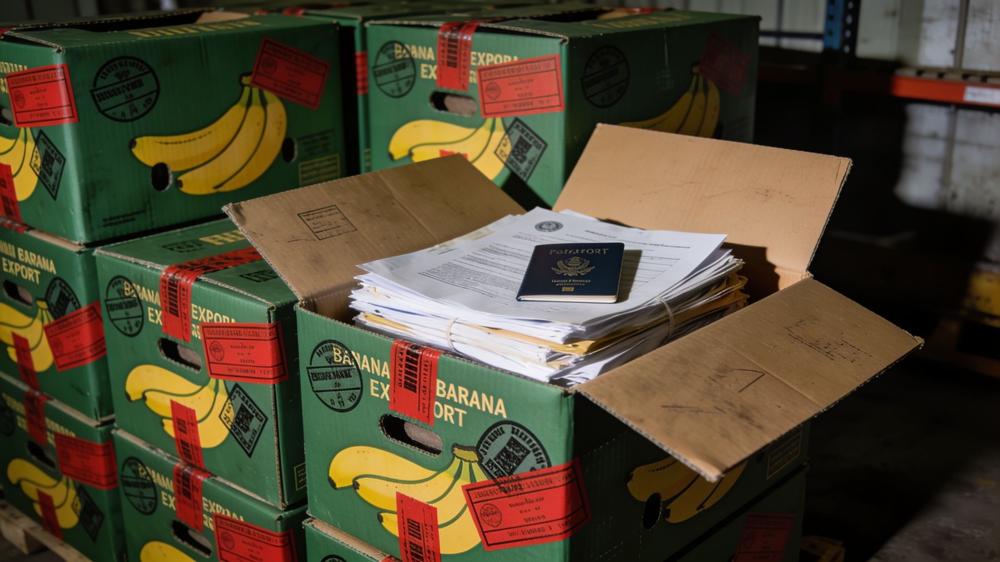
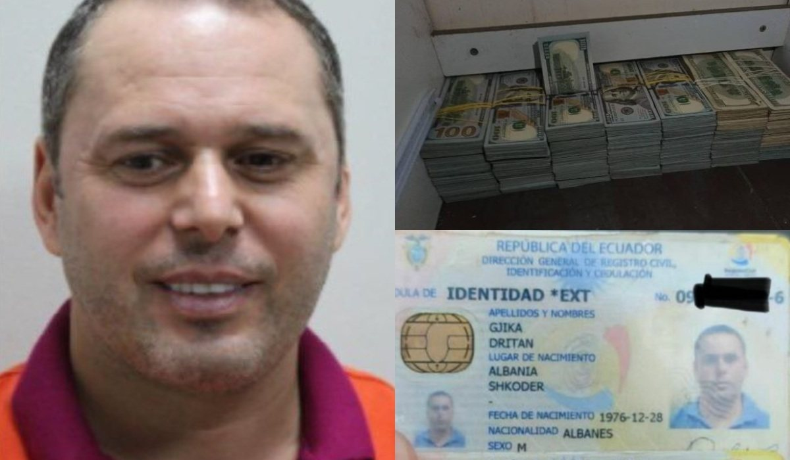
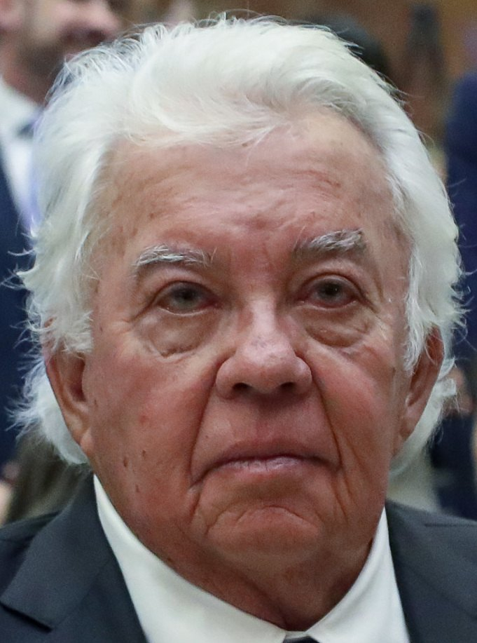
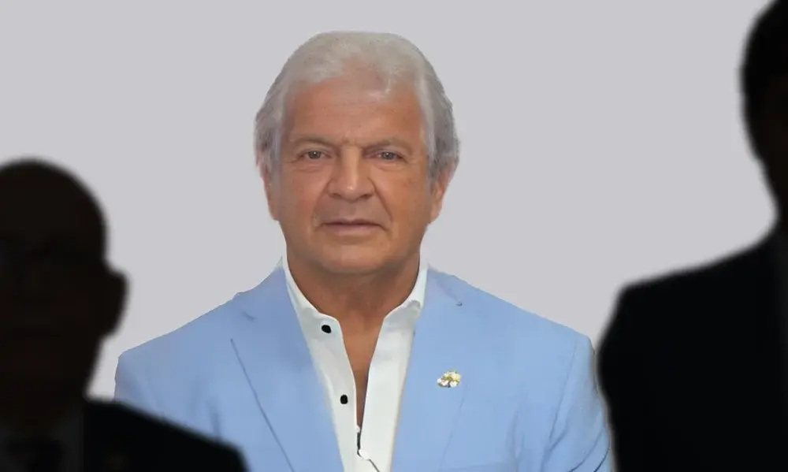
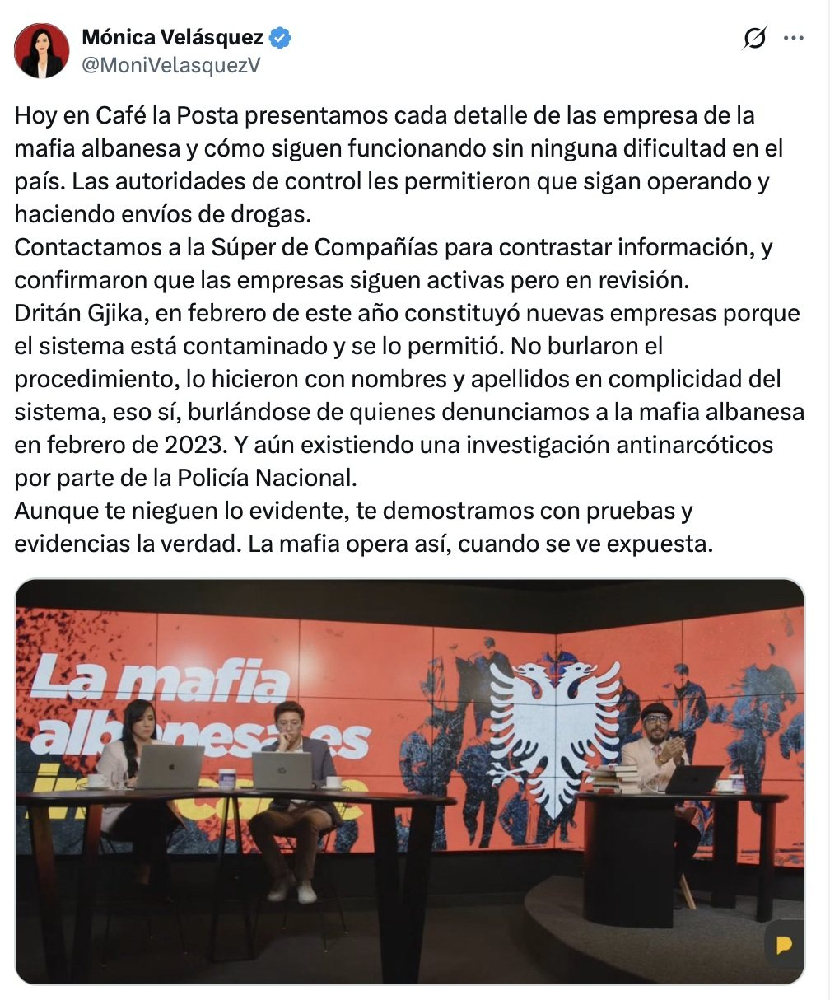
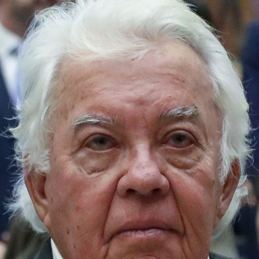
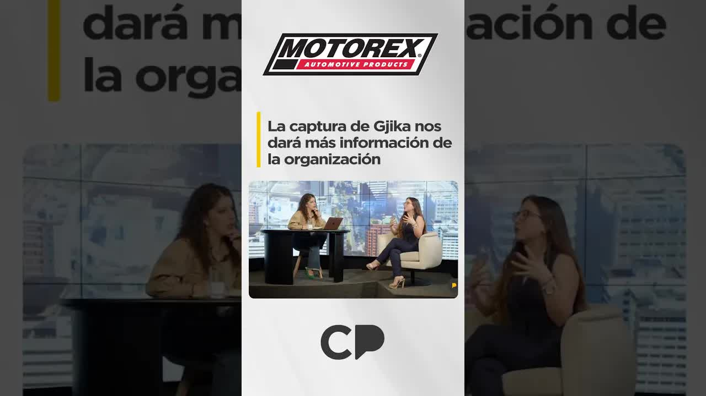
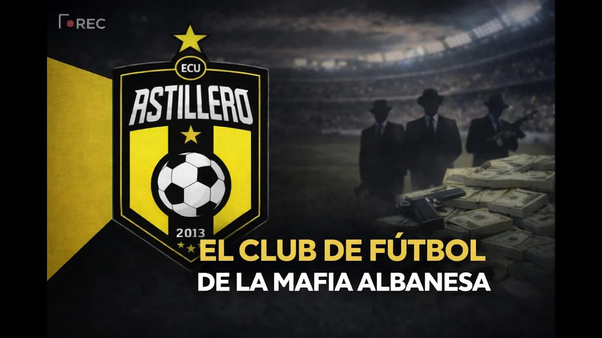

22 ago 2024 · La mafia albanesa sigue operando impune
Dritan Gjika llegó a Ecuador en 2009 con visa de turista y dejó un rastro de 71 empresas: constructoras, inmobiliarias, bananeras, una exportadora de cannabis, una arenera. La Policía lo identificó como jefe de la mafia albanesa en el país, la que reemplazó a los italianos en el envío de cocaína a Europa. Su socio era Rubén Cherres, el amigo del cuñado del presidente. En agosto de 2024, seis meses después del operativo que no lo atrapó, La Posta revisó el registro mercantil: sus empresas seguían activas.

Para entender esta historia hay que saber quién manda en el narcotráfico ecuatoriano. Las bandas locales, Choneros, Chonekillers, Tiguerones, Águilas, Fatales, trabajan para mafias internacionales. En la primera ola, entre 2012 y 2019, mandaron los mexicanos. En la segunda llegaron los albaneses, que fueron desplazando a la Ndrangheta italiana del traslado de cocaína y tomaron las rutas hacia el Reino Unido, la principal puerta de la droga en Europa. El narcotráfico no es plantar coca y mandarla en barco: es una industria que necesita empresas, exportadoras, bananeras, transportistas, dinero en efectivo y dinero bancarizado.

CédulaDritan Gjika, albanés, llegó a Ecuador en 2009 con una visa de visitante temporal. En trece años viajó decenas de veces a España, Albania, Alemania, Colombia, Turquía y Emiratos Árabes. La Policía Antinarcóticos lo identificó como jefe de la mafia albanesa en el país, alias Gran Hermano o Tony, en un informe de inteligencia de 2021 llamado León de Troya, que el general Giovanni Ponce, director antinarcóticos mantenido en el cargo por el ministro Patricio Carrillo, archivó. El 10 de enero de 2023, en pleno caso El Gran Padrino, La Posta lo nombró por primera vez: Rubén Cherres Faggioni, alias Petrolero, el mejor amigo de Danilo Carrera, cuñado del presidente Guillermo Lasso, era socio de Gjika. Habían registrado siete compañías el mismo día, en la misma notaría, cuando Lasso se posesionaba en mayo de 2021. La red pedía puestos en Aduanas, Aviación Civil y BanEcuador y tenía militares comprados, según lo publicado entonces. Lasso nunca fue investigado por esto. Fue el primer día que el medio recibió una amenaza directa de la mafia albanesa.

Según la Fiscalía, la red lavó 43 millones entre 2015 y 2023.
La Fiscalía General del Estado, que dirigía la fiscal general Diana Salazar, reaccionó en febrero de 2023 anunciando que reabriría León de Troya como caso de narcotráfico. Terminó convirtiéndolo en el caso Encuentro, un expediente de corrupción política sin narcotráfico: el nombre del albanés salió del proceso. A fines de marzo de 2023 mataron a Cherres en una casa de Punta Blanca, a un kilómetro de la casa de playa del presidente, junto a un amigo que lo visitaba, su pareja de ese fin de semana y el guardia de la garita; alguien que conocía su escondite lo entregó. La Fiscalía acusó a dos sicarios; no tiene autor intelectual. Las grabaciones en que Cherres hablaba de Tony sobrevivieron porque estaban en un centro de interceptación bajo control de Estados Unidos. Después de la reapertura, La Posta contó los detalles societarios: Cherres y Gjika compartían Inmobil Real Estate, Drixsa, Drisdard, Trustal, Inmosat, Inducort, un montón de constructoras. La Superintendencia de Compañías las fue disolviendo en mayo de 2023.
Pasó un año y dos meses sin que nadie tocara a Gjika. En febrero de 2024 la Policía española, que había rastreado el dinero de la red hasta cuatro empresas en España, obligó a Ecuador a actuar. El operativo se llamaba Gran Fénix; como se parecía al plan Fénix del presidente, la Fiscalía de Diana Salazar lo rebautizó Pampa. Treinta detenidos, 42 allanamientos, 48 millones de euros en bienes incautados, 36 de ellos en Ecuador. Gjika no cayó. Según las averiguaciones de La Posta, alguien de la Fiscalía ecuatoriana le avisó: un mes antes del operativo empezó a traspasar acciones de sus empresas y una nota de Ecuavisa lo registró quince días antes. Los detenidos eran colaboradores menores; el más importante, Julio César Lalangui, alias El Agrónomo. La Policía española encontró certificados bancarios: la red había movido 35 millones de dólares por bancos ecuatorianos sin que un solo oficial de cumplimiento preguntara y sin un informe de la UAFE.


El 22 de agosto de 2024 Boscán, ya en el exilio, hizo el ejercicio: un año y siete meses después de la primera publicación, qué había hecho el Estado con las empresas. Mónica Velásquez y Cristian Torres revisaron la Superintendencia. Una constructora del Sky Building, una de las siete del mismo día, seguía activa y facturando. Construador, en liquidación por sospecha de lavado, había sido vendida en plena liquidación por Gjika a Carla Lorena Calasanz Valle, hija del liquidador que el Estado había designado, Manuel de Jesús Calasanz Pico; ella la revendió en veinte días y la empresa siguió operando; tenía más de un millón de dólares en activos líquidos. Riomel Gold Corporation, una arenera con acciones de medio millón, había sido fundada el 31 de octubre de 2023, después de las denuncias, por Gjika y Lalangui, con un permiso que llevaba la firma del Gobierno de Lasso. Cresmark, una bananera cuyo beneficiario final es Gjika, seguía activa y operando; los líderes de la red se movían en sus autos, que seguían rodando después del operativo. Agricomtrade, otra bananera, había pasado en febrero de 2024 al hijo de El Agrónomo.
Construcción
Cherres se la vendió a Gjika el 14 de mayo. Disuelta tres meses después de anunciarse el caso León de Troya
Construcción
De Cherres y Gjika; Drixsa constituida en julio de 2021. La construcción es el principal mecanismo de lavado del país
Construcción
Una de las siete constituidas el mismo día. Funcionaba en el Sky Building de Guayaquil y seguía facturando en agosto de 2024
Recolección y tratamiento de desechos
Constituida en 2012, de Gjika desde el 7 de diciembre de 2021. El liquidador designado por la Superintendencia, Manuel de Jesús Calasanz Pico, permitió que Gjika la vendiera a Carla Lorena Calasanz Valle, su hija. Ella la revendió en 20 días. Tenía más de un millón de dólares en activos líquidos
Extracción y dragado de arenas
Fundada el 31 de octubre de 2023, después de las denuncias, por Gjika y Julio César Lalangui, alias El Agrónomo. Permiso firmado bajo el Gobierno de Lasso
Comercialización de cannabis
Fundada el 17 de agosto de 2021 por Lalangui y Gjika
Exportación de banano y productos agrícolas
Beneficiario final: Gjika. Los líderes de la red se movían en autos de esta empresa; seguían rodando después del operativo
Venta al por mayor de banano
Gjika se la vendió en febrero de 2024 a Bryan Lalangui, hijo de El Agrónomo. Disuelta el día del programa de La Posta
Seguridad privada, 340 empleados
De Héctor Pesantes, alias Glock, condenado a siete años. Pasó a su cuñado y primo Pedro Pesantes. Cliente de la Federación Deportiva del Guayas; 2,4 millones en contratos con el Estado, sobre todo con Celec, según Connectas
Fútbol, segunda categoría
Fundado en enero de 2022. Directiva con cuatro Pesantes hasta diciembre de 2024; en abril de 2025 cambió de nombre y puso una presidenta que las fuentes llaman prestanombres. Un club de segunda no rinde cuentas a la Superintendencia, al SRI ni a la UAFE
Estado según los registros de la Superintendencia citados por La Posta y La Fuente en agosto y septiembre de 2024.
Cuando tú mueves más de cinco lucas tienes que traer el juramento de tu abuelita. Cuando el narcotráfico mueve 35 millones no hay un solo pelele en un banco que diga: y esto qué.
Andersson Boscán, 22 de agosto de 2024
El día anterior la Superintendencia había respondido a La Posta que existían informes técnicos y jurídicos aprobados para la disolución de las compañías del caso Gran Padrino; la disolución se anunció el día de la publicación. Agricomtrade fue disuelta el 22 de agosto de 2024. Dos semanas después, La Fuente publicó que la Superintendencia había mapeado 71 empresas relacionadas con Gjika, 17 con él como administrador o accionista, y que 40 funcionarios supervisan 180.000 sociedades. Boscán contó además cómo la mafia había conseguido liberar a dos procesados de Pampa y tenía tres más por salir: había hablado con un juez de Quito y con dos funcionarios de la Fiscalía cuyos nombres ofreció entregar. Cuando alguien sopló, el Consejo de la Judicatura presionó a la fiscal de turno y al día siguiente la Fiscalía formuló cargos por asociación ilícita contra dos personas en Los Ríos; el operativo se hizo desde la Judicatura con la Policía porque la Fiscalía no quería participar. La Posta identificó al menos siete socios de Gjika que no fueron procesados en Pampa.
En el centro de todo lo que no pasó hay una sola institución. La Fiscalía General del Estado de Diana Salazar fue la que decidió, en febrero de 2023, que León de Troya no sería un caso de narcotráfico sino uno de corrupción política; la que un año después rebautizó el operativo que le llegó armado desde España y lo presentó como un gran golpe al crimen organizado; la que dejó fuera del proceso al menos a siete socios de Gjika identificados por La Posta; y la que, según lo que Boscán publicó ese 22 de agosto de 2024, tenía funcionarios trabajando para la mafia. Boscán fue preciso en lo que decía y en lo que no: la acusación era contra gente de la institución, no contra la fiscal general, y ofreció entregar los nombres de los dos funcionarios con los que había hablado. Ese mismo día la Fiscalía desmintió públicamente que personas relacionadas con la mafia albanesa trabajaran en la entidad o entorpecieran el caso Pampa. Nadie recogió los nombres.
En enero de 2025 un tribunal condenó a ocho miembros de la red por lavado de activos: la Fiscalía calculó 43 millones lavados entre 2015 y 2023. Uno de ellos, Héctor Salomón Pesantes Sangurima, alias Glock, expolicía y dueño de la empresa de seguridad Agusepro, 340 empleados, recibió siete años. Su rol, según las autoridades, era coordinar envíos y facilitar logística; según las fuentes de La Posta, contaminar contenedores y montar anillos de seguridad para Gjika, incluido el día del operativo. Para febrero de 2026 estaba en libertad. Agusepro siguió operando: las acciones pasaron a Pedro Pesantes, su cuñado y primo. Una investigación de Connectas, Criminals and Contractors, rastreó 2,4 millones en contratos de esa empresa con el Estado, sobre todo con Celec, la eléctrica que en El Gran Padrino aparecía bajo control de Danilo Carrera.
Dritan Gjika fue detenido el 26 de mayo de 2025 en Abu Dabi, Emiratos Árabes Unidos, con orden de extradición ecuatoriana. Los documentos judiciales revisados por OCCRP describen instrucciones interceptadas: mantener las transferencias por debajo de 50.000 dólares para no alertar a las autoridades, y empresas en Emiratos y España para blanquear. En Ecuador la experta Katherine Herrera dijo en La Posta que la captura abriría la puerta a la estructura. En septiembre de 2026 la extradición seguía pendiente. El 3 de marzo de 2026 la Policía detuvo a 16 ecuatorianos vinculados a la mafia albanesa en el caso Costa. Dritan Rexhepi, el otro capo albanés, liberado por un beneficio penitenciario y fugado, fue capturado en Turquía en noviembre de 2023 y extraditado.

Los que la denunciaron pagaron su precio. El teniente coronel José Luis Erazo, que dirigió León de Troya, terminó investigado por la Fiscalía por haber investigado a los narcotraficantes; a los periodistas que siguieron la misma pista también los persiguieron. Boscán y Velásquez ya estaban en el exilio desde 2023, con dos demandas de medio millón de dólares de Danilo Carrera por haberlo nombrado; la audiencia de la segunda fue en febrero de 2026. Jorge Navarrete, del equipo, salió temporalmente por una investigación de narcotráfico. El Ecuador siguió siendo el principal exportador de cocaína hacia Europa, con el 7 por ciento de los procesados por lavado condenados entre 2020 y 2022 y 3.500 millones de dólares lavados por su sistema financiero solo en 2021, según el Observatorio de Crimen Organizado y la Global Initiative.
Diana Salazar dejó la Fiscalía en mayo de 2025, un mes después de terminado su periodo; días más tarde detuvieron a Gjika en Abu Dabi. De los seis años en que su despacho tuvo el caso quedó un expediente de corrupción sin narcotráfico, un operativo que le llegó hecho desde España, ninguna de las empresas activas procesada y, ya después de la publicación, una investigación fiscal sobre la red de compañías que el programa dejó a la vista. La abrió la misma institución que tenía el caso desde 2023.
Actualizado el 5 de septiembre de 2026
Con visa de visitante temporal. Empieza a fundar empresas.
Cherres y Gjika registran siete compañías en la misma notaría.
La Policía Antinarcóticos mapea la red. El general Giovanni Ponce archiva el informe.
Último registro de salida del país, a Dubái.
Primera mención pública del socio albanés de Cherres.
La Fiscalía reabre León de Troya. Se convertirá en el caso Encuentro.
En Punta Blanca, con tres personas más.
La Superintendencia disuelve las constructoras de Cherres y Gjika.
Gjika funda una arenera después de las denuncias.
30 detenidos, 48 millones de euros. Gjika no cae.
La Posta revisa el registro. Agricomtrade se disuelve ese día.
Pesantes, siete años por lavado.
En Abu Dabi. Extradición pendiente.
Astilleros FC y los cuatro millones al año.
16 detenidos vinculados a la mafia albanesa.
Jefe de la mafia albanesa en Ecuador, alias Gran Hermano o Tony, según la Policía y la Fiscalía. 71 empresas relacionadas.
Alias Petrolero. Socio de Gjika. Mejor amigo de Danilo Carrera, cuñado de Lasso.
Socio en Cannmaná y Riomel Gold. Su hijo recibió Agricomtrade.
Expolicía, dueño de Agusepro y presidente de Astilleros FC.
Fiscal general del Estado entre abril de 2019 y mayo de 2025. Bajo su gestión la Fiscalía reabrió León de Troya y lo convirtió en el caso Encuentro, sin narcotráfico, y presentó el operativo Pampa como un gran golpe al crimen organizado. La entidad negó que tuviera funcionarios trabajando para la mafia albanesa.
Liquidador designado por la Superintendencia para Construador. Permitió la venta a su hija.

Cuñado del expresidente. Nunca fue procesado por narcotráfico; la Fiscalía lo acusó después como parte de una estructura delincuencial en el caso Encuentro. Demandó dos veces a Boscán por medio millón de dólares.
Fotos vía Wikimedia Commons. Diana Salazar: Cesargoza (CC BY-SA 4.0); Danilo Carrera: Asamblea Nacional del Ecuador (CC BY-SA 2.0).
Respondió a La Posta el 21 de agosto de 2024 que continuaba los controles de oficio a las compañías del caso Gran Padrino y que existían informes técnicos y jurídicos aprobados para su disolución. Su superintendente, Marco López, dijo a La Fuente que 40 funcionarios supervisan 180.000 sociedades.
Presentó el operativo Pampa como un gran golpe al crimen organizado. El 22 de agosto de 2024, el día del programa, desmintió públicamente que personas relacionadas con la mafia albanesa trabajaran en la entidad y entorpecieran las investigaciones del caso Pampa. Boscán sostuvo que gente de la Fiscalía trabajaba para la mafia, aclaró que no acusaba a la fiscal general Diana Salazar y ofreció entregar los nombres de los funcionarios con los que había hablado.
Sostiene que solo prestaba servicios de seguridad y que no tenía nada que ver con la mafia albanesa.


la mafia albanesa en el Ecuador opera desde hace más o menos 12 años pero desde hace un año y medio cuando este medio de comunicación te contó por primera vez de su existencia y su relación con la política ha sido el eje central de la conversación del narcotráfico y gran narcotráfico está muy por encima de los choneros los chone quiles los tiguerones los Águilas los fatales en fin todas las bandas locales trabajan fi…
Leer la transcripción completatal vez, bueno, conseguir más información al respecto. ¿Tú crees que con la caída de Dritan comienza como que a eh tratar de romper estas estructuras criminales o solamente es la caída de uno de los eh tal vez bueno conseguir más información al respecto? ¿Tú crees que con la caída de Dritan comienza como que a eh tratar de romper estas estructuras criminales o solamente es la caída de uno de los líderes? ¿Por qué te …
Leer la transcripción completapersonas que nos acompañan esta mañana y es un tema que ya muchas personas lo veían venir, ¿no? Eh, no solamente el narcotráfico lava a través de los influencers, estas personas que se dedican a vender choripanes o a tener empresas de seguridad, restaurantes, gimnasios, sino que también lo hacen a través del fútbol. Es un secreto a voces, como dice el lugar común, ¿no? Todo el mundo sabe que en el fútbol pasa algo. T…
Leer la transcripción completaTranscripciones de los subtítulos automáticos de cada programa. No están corregidas a mano: sirven para buscar una frase y llegar al minuto exacto del video, no como cita textual literal.
Diana Salazar dejó el cargo un mes después de terminado su periodo, con el caso sin resolver.
Detenido con orden de extradición. Aún no entregado.
La red seguía lavando: un club de segunda categoría fuera de todo control.
La Fiscalía abrió una investigación sobre la red de empresas que la publicación dejó a la vista. La misma institución que tenía el caso desde 2023.
Los nombres de las empresas y sus estados provienen de los registros de la Superintendencia de Compañías citados por La Posta y La Fuente en agosto y septiembre de 2024. El programa del 22 de agosto de 2024 sitúa el operativo Pampa en mayo; la fecha correcta, febrero de 2024, es la de la Fiscalía. Los videos son los programas originales, alojados en este sitio. El periodo de Diana Salazar al frente de la Fiscalía General del Estado, de abril de 2019 a mayo de 2025, y el desmentido de la entidad del 22 de agosto de 2024 constan en las fuentes citadas.